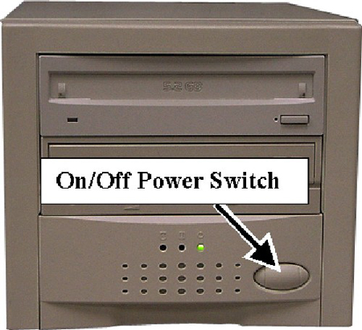

Operating Documentation
Direction 5440001-3, Rev# 6
Module Version 7.0, Version Date 11/12/09
Operating Documentation |
| ||||
| Electric Shock Hazard! | ||||
| Lethal voltages are present inside the Global Operator Console (GOC) Tower. | ||||
| Ensure power is turned off and that the power cord is removed before opening the drive tower. |
Shut down the PC software.
Power down the Global Operator Console (GOC).
Turn off power to the SCSI Tower (see Illustration 1).
Remove the SCSI cable, power cable, and SCSI terminator from the rear of the original SCSI Tower Assembly (see Illustration 2).
Discard the external terminator.
Remove three screws from the original SCSI Tower cover (as shown in Illustration 4).
Slide the cover to the rear to remove it. See Illustration 5.
Remove the faceplate by releasing the four tabs while pulling the faceplate away from the unit. See Illustration 6.
Remove four screws from the drive (two on each side) and slide it out the from of the tower as shown in Illustration 7 and Illustration 8. The DVD drive is on the top and the MOD drive is on the bottom (or secondary) drive.
(For DVD Drive) Verify jumper positions on DVD as shown in Illustration 10 and Illustration 11, based on the version of the SCSI bridge. In addition, JP2 and JP4 on the bridge should be shorted with a jumper.
(For Sony MOD Drive) Verify the following settings and jumpers:
Partially slide the drive into the new tower and connect the power and data cable. Connect power and ribbon cables to drives. Note that a new power/data cable (contained in p/n 5119212) for the DVD drive is provided. This must be utilized and the data portion installed along with the power cord. MOD drive should be the last connector on the ribbon cable.
Reinstall the four drive-mounting screws.
Install the SCSI Tower cover. See Illustration 4.
Reconnect the power cable and SCSI cable.
Power on the GOC.
Apply power to the SCSI Tower Assembly on the back of the unit, as shown in Illustration 3.
Open a command window.
Run the command scsistat.
Launch MR Service Desktop.
Click [Configure].
Click [FE mode].
Click [Click here to start the tool].
Login window will open.
Login: Root.
Password: operator.
From the Utilities heading in the left navigation tree, select [Display MOD/CD-ROM].
Click [Setup Devices].
When this procedure is complete, exit the guided install module and go to Finalization, Step 1 (plus remaining steps of the Finalization section).
Shut down the PC software.
Power down the Global Operator Console (GOC).
Turn off power to the SCSI Tower (see Illustration 19).
Remove the SCSI cable, power cable, and external terminator from the rear of the SCSI Tower Assembly (see Illustration 20).
From the SCSI Tower cover, remove three screws (as shown in Illustration 21).
Disconnect power and data connections from the rear of the device.
| NOTE: | Steps to remove the MOD drive are similar to those for removing the DVD Drive. |
Remove four screws from the drive (two on each side) and slide it out the front of the tower as shown in Illustration 22. The DVD drive is on the top and the MOD drive is the on the bottom (or secondary) drive.
(For replacing the MOD drive) Remove one jumper from the functional switch (see Illustration 23) and save it for the replacement MOD.
(For replacing the DVD drive) Verify jumper positions on DVD as shown in Illustration 24.
(For Sony MOD Drive) Verify the following settings and jumpers:
Partially slide the drive into the tower and connect the power and data cable.
Reinstall the four drive-mounting screws.
Install the SCSI Tower Cover and replace the three screws. See Illustration 28.
Reinstall the SCSI cable, power cable, and SCSI terminator to the rear of the SCSI Tower Assembly. See Illustration 29.
Power ON the GOC.
Confirm the green power light on the right front of the SCSI Tower is illuminated. If not, apply power to the SCSI Tower Assembly from the power button on the front of the unit as shown in Illustration 30.
Illustration 30: SCSI Tower Assembly Power Switch

Confirm the SCSI Tower Assembly is receiving power.
Confirm the SCSI data cable and SCSI terminator are connected as shown in Illustration 29 (locations not important).
Confirm that the other end of the SCSI data cable is connected to the PC.
If power was applied to the SCSI Tower too late in the boot process, the software may not have detected it. If this is the case, reboot.
Shut down the PC software.
Power down the Global Operator Console (GOC).
Turn off power at the rear of the SCSI Tower (see Illustration 31).
Remove the SCSI cable and power cable from the rear of the SCSI Tower Assembly (see Illustration 31).
Remove 4 screws from the bottom of the SCSi tower. See Illustration 32.
Turn the tower upright and slide the enclosure to the rear to remove. See Illustration 33.
Remove the faceplate using a standard screwdriver to release the 4 tabs while pulling faceplate away from the unit. See Illustration 34.
Remove the lower drive cover from the faceplate of the new SCSI tower if you will be installing a DVD-RW drive. See Illustration 35.
Remove the old MOD and DVD-RW drives.
(For DVD Drive) Verify jumper positions on DVD as shown in Illustration 36 and Illustration 37, based on the version of the SCSI bridge. In addition, JP2 and JP4 on the bridge should be shorted with a jumper. .
(For Sony MOD Drive) Verify the following settings and jumpers:
Partially slide the drive into the new tower and connect the power and data cable. Connect power and ribbon cables to drives. Note that a new power/data cable (contained in p/n 5119212) for the DVD drive is provided. This must be utilized and the data portion installed along with the power cord. MOD drive should be the last connector on the ribbon cable. See Illustration 41.
Secure the drives into the drive cage with screws as shown in Illustration 42.
Snap the faceplate back into position.
Slide enclosure over tower and secure with 4 screws. See Illustration 43.
Apply power to the SCSI Tower Assembly on the back of the unit.
| NOTE: | Perform the following procedure for all drives in the tower. For DVD-R/W, write to the DVD drive to make sure it is functional. |
In the left navigation pane, go to Utilities and select SaveRestore.
Click [Save Information & SaveGI]. (This operation is often referred to as performing a “SaveInfo”.)
Insert the media to be used into the drive.
Perform a Verification of SaveInfo Data to ensure information was saved correctly.